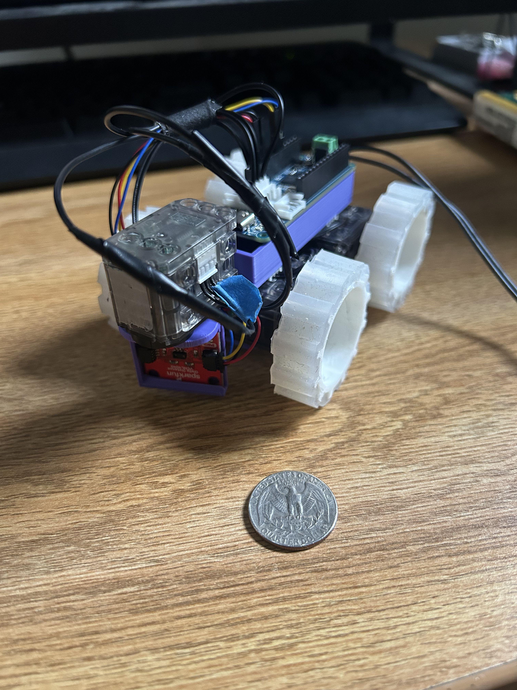
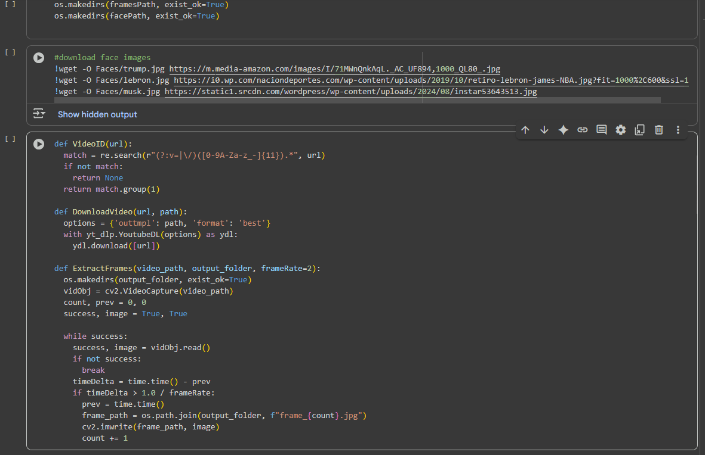
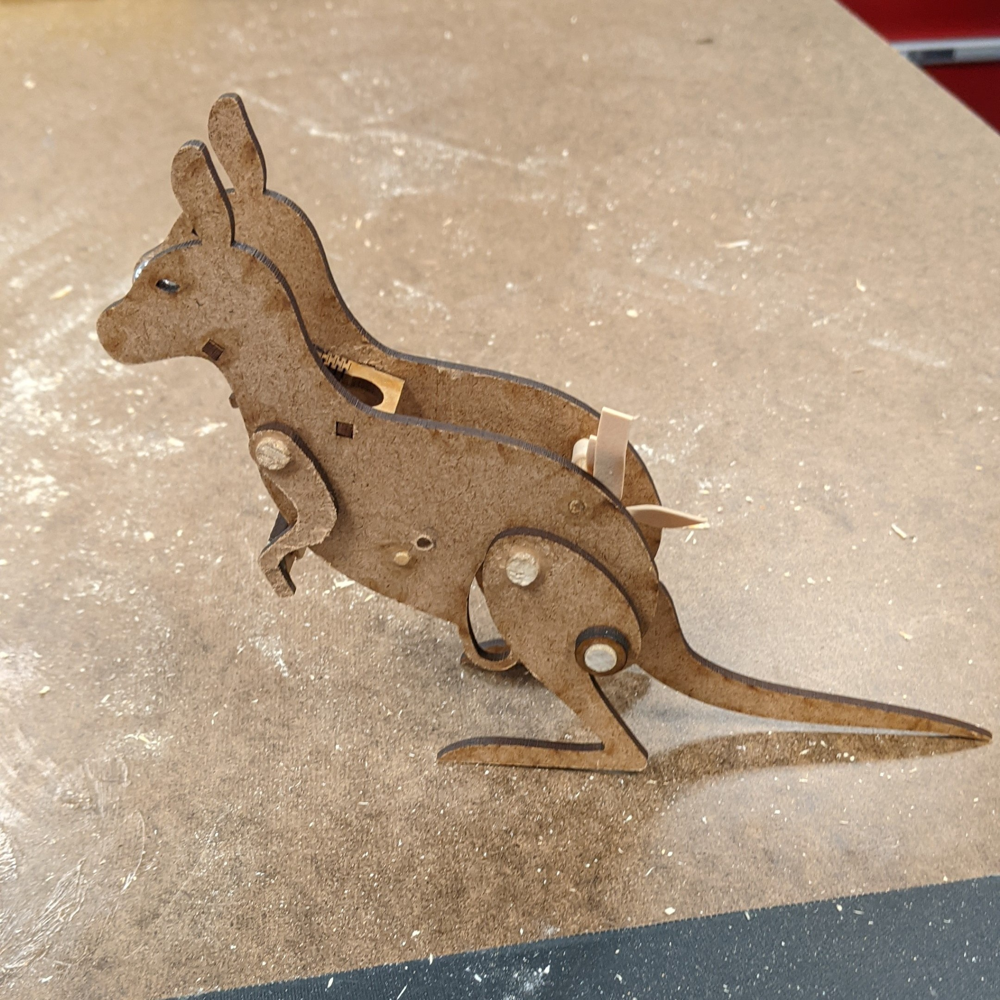

Brooklyn-based software developer.
Highlights
-
Soft-Sensor Sleeve for Robotic Arms
Developed and implemented soft-sensors to create a squishy, flexible sleeve to attach onto a hard robotic arm allowing it to react to human interaction and proximity. This project positioned me in a leadership role, responsible for task management and assignment, product design and creation, software architecture and development, and project organization and documentation.

-
Obstacle Avoiding Robot
A compact, rudimentary, collision-avoiding robot created using few components within a short timeframe. In this project, I was able to create a strict scope that worked well within the given timeline and efficiently delivered on all the goals.
 -
Using Machine Learning and Webscraping to Understand Online Spaces
I wanted to experiment using facial recognition, comment sentiment analyzers and webscraping to make a scientific assessment about the social media spaces that I and many others are exposed to on a daily basis. I learned how to adopt and utilize different machine learning models, as well as use YouTube’s API to create my own webscraper.
 -
Kangaroo Hopper
A biologically-inspired mechanical device, designed to trigger after a delay, efficiently releasing stored energy. Here, I first learned how to work and think through the design process-- ideation, prototyping, testing, troubleshooting, and repeating-- to reach my predetermined design goal.
